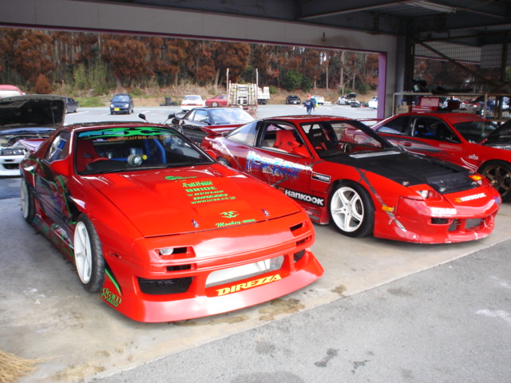

| video | radio | |
writing | link&friend |
|---|
Sekia Hills was famous for its tight-knight community of clubs and shops, with a lot of drivers taking pride in the fact that Sekia was ‘their’ circuit. It was a matter of honor to defend the track from any teams outside the region, and no one did that more fiercely than a little-known team named Red Ribbon. From their humble beginnings in the early 2000's to their total domination of the circuit in the late 2000's, the team’s always been run by the owners of the most groundbreaking shops in the scene. It started with Kazu Power, and their owner Kazutaka Yamashita.
Among the first to embrace the early-2000's “Sekia style,” they’ve always been one of the largest, most forward-thinking shops to frequent the circuit. In the very early days, he ran together with his best friend, Shigenobu Koga. Koga was only a mechanic at a local dealership, but his FC3S RX-7 was super stylish and well-built, landing tons of magazine features alongside Kazu Power's red 180sx. This laid the groundwork for Red Ribbon: it was the beginning of the color scheme and local event domination that came to be synonymous with the group. When the mid-2000s rolled around, they officially gave themselves that name, and started competing even more prolifically at the circuit. As the trophy cabinet at Kazu Power filled up, they started to move towards bigger, more competitive events, one of them being the MSC challenge.

MSC team battles required three cars, so Kazu had to some searching. The next addition to RR was Taku Forklift, an OG shop run by Tokihira Fujiwara. Taku was another one of the most popular shops in the area, partly because it served as a wrecking yard as well as a tuning shop, which attracted a ton of customers from the famously crash-prone circuit. They even had their own team, but Fujiwara would hang out with Red Ribbon anytime the circuit needed defending. Another new member was Osamu Yamaguchi, owner of Racing Factory TKC. Longtime sponsor of early Sekia club KII Selection, he was an off and on participant.
The biggest change, however, was Gun Sports' rise to prominence. Gun was a much more recent name on the lengthy list of Sekia shops, and was also a little smaller than the places previously mentioned, but that was because someone very familiar to the club had started it. Koga had finally decided to quit his dealership job and fully dedicate himself to drifting, and results came very quickly. By far the best driver in RR, Gun Sports quickly became the leading shop of the group. Koga was always the first in the train, and had a ton of success in solo events as well. Gun propelled the group into a lot of wins in bigger, more competitive events, and by the late 2000s, they were notorious in the local community. That may have been because of the sheer number of members though, as the additions didn't stop there.
Almost everyone had a friend who "drove for them." The team wasn't very formal: Red Ribbon started to become an interconnected web of the best drivers and biggest shops that would come together for any regional competitions. Other notable members include Tomio Kumashiro, owner of the yellow DEC RX-7, and Koji Hatsuda, owner of Twins502, a jet ski shop swept up in the drifting craze that produced some of the coolest cars to ever slide at Sekia.

As the circuit tumbled into its first bankruptcy, Red Ribbon started showing up less and less. The tumultuous early 2010s meant that the circuit didn't really hold any events large enough for the full team to make an appearance, and when Sekia went bankrupt for the final time in 2013, it served as the final nail in the coffin. About half the shops I talked about are still open, but almost all of them are kept alive in some way or another. Koga still competes in D1 Lights and Formula Drift, running TKC and Kazu Power stickers on his car. The other shops also follow that pattern, continuing to run the stickers of long-forgotten teammates. Every once in a while, the crew meets up to hang out at other tracks, just like it's the 2000's again. Even though it may not be alive anymore, Red Ribbon will forever be remembered as the club that terrorized an entire circuit for almost a decade.